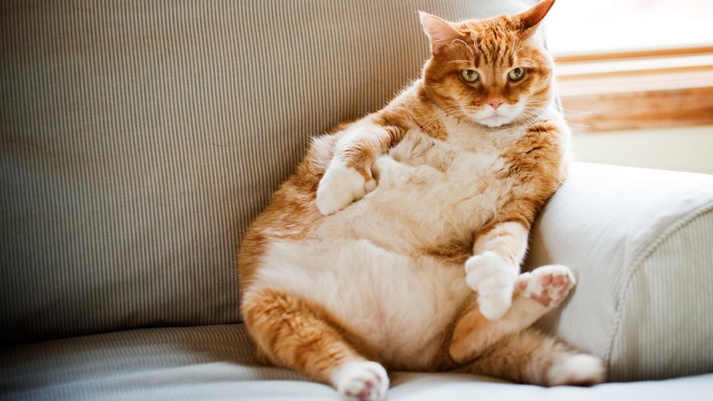
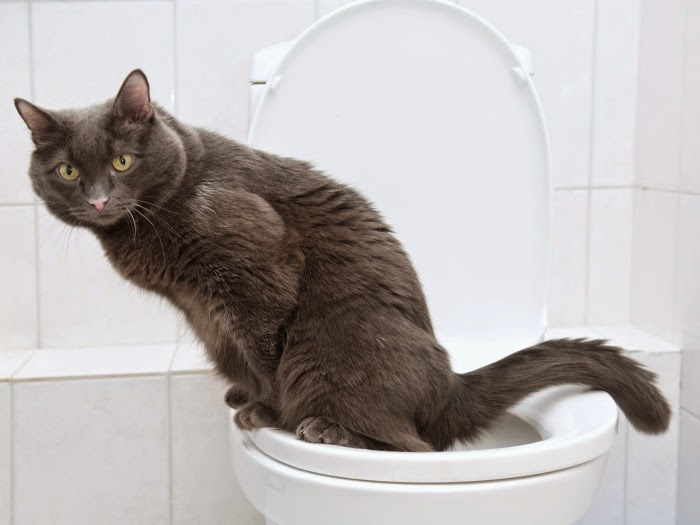

WikiVet
A WikiVet é um projeto elaborado pelo curso de medicina veterinária da Universidade de sorocaba. Esse projeto visa trazer um breve resumo sobre as principais patologias presentes na clínica de pequenos animais
Lipidose hepática felina:
É uma doença hepática que acomete felinos, cuja qual é caracterizada pelo acúmulo de triglicerídeos nos hepatocitos, sendo este causado por períodos longos de inapetência ou anorexia, gerando alterações na morfologia e função hepática.
Etiologia:
Pelo fato dos felinos serem animais carnívoros verdadeiros, o metabolismo lipídico e proteico, os tornam dependentes obrigatórios de ácidos graxos essenciais, aminoácidos e vitaminas, os quais se tornam deficientes em casos de anorexia. Logo, um balanço energético negativo causado, principalmente, pela anorexia, é considerado o fator inicial para o desenvolvimento dessa doença.
A lipidose hepática felina pode ser classificada em primária e secundária. Sendo:
- Primária/ idiopática: aparece, geralmente, em animais obesos. A anorexia ocorre em um animal saudável que passa por alguma mudança brusca em sua alimentação, por introdução de alimentos pouco palatáveis, pela redução na ingestão de alimentos após um evento estressante (ocorre liberação de catecolaminas) ou jejum prolongado (induz lipólise periférica e aumento no aporte de de ácidos graxos para o fígado, consumo inadequado de aminoácidos essenciais e deficiência na carnitina).
- Secundária: o animal desenvolve anorexia causada por uma doença associada, sendo essa, a forma mais comum. Dentre essas doenças, as principais são a obesidade, diabetes melito, pancreatite, hipertireoidismo e hipotireoidismo, cardiopatia, hiperadrenocorticismo, anomalias portossistêmicas e infecções.
Predisposição:
Esta patologia é mais comum em gatos com condição corporal elevada sujeitos a um período prolongado de privação de alimento.
Sinais Clínicos:
Os gatos podem apresentar anorexia, perda de peso, vômitos, constipação ou diarréias, palidez, icterícia, depressão, perda de apetite e letargia. Em estágios mais avançados, os animais podem desenvolver sinais clínicos condizentes com encefalopatia hepática, como demência e coma, há alguns relatos de que também podem apresentar perda de visão.
Diagnóstico:
O diagnóstico é feito a partir de dados obtidos no histórico, exame físico, exames complementares e nos achados citológicos e histopatológicos da biópsia hepática ou necropsia, sendo que o diagnóstico definitivo é obtido somente por meio da análise histopatológica.
Tratamento:
principal forma de tratamento para a lipidose hepática felina destina-se à inversão do catabolismo de gorduras e proteínas e manejo das manifestações clínicas, suporte nutricional intensivo e reconhecimento e manuseio de qualquer outra doença associada que esteja favorecendo o aparecimento da lipidose. Deste modo, é importante que haja suplementação nutricional e fluidoterapia associados a terapias mais específicas.

Por: Brenda Brito, Gabriela Boneto, Julia Iamashita, Livia Wingers e Stephanea Mello
Complexo respiratório felino:
O complexo respiratório felino é uma doença infecciosa e contagiosa que
pode ser ocasionada por vírus ou bactérias, de forma isolada ou associada. Evolui
manifestando sintomatologia de origem ocular e /ou nasal, respiratória e pode
levar à morte se atingir proporções graves.
Etiologia:
O Complexo Respiratório em Felinos é uma doença que possui uma
etiologia múltipla, de caráter infeccioso e contagioso, onde os patógenos podem
atuar em separadamente ou em conjunto, podendo acometer as vias
respiratórias superiores e causar alterações conjuntivais. Os agentes envolvidos
em 90% dos casos de CRF são: Herpesvirus Felino e o Calicivírus Felino. Podem
também estar envolvidas bactérias como a Bordetella bronchiseptica, e a
Chlamydophila feliz.
Predisposição:
As secreções respiratórias provenientes de gatos doentes,
convalescentes ou portadores são a matéria contagiante. A transmissão da
doença se dá por contacto direto entre animais ou indireto num meio ambiente
contaminado por gotículas infetadas. Os animais mais suscetíveis de contrair a
doença são os gatos que vivem em gatis ou em comunidades com muitos
animais, em fracas condições higieno-sanitárias e sem vacinas, e os gatos muito
jovens e adultos imunodeprimidos também podem ser afetados.
Sinais clínicos:
Incluem quadros de inapetência, apatia, sintomas de origem respiratória,
ocular e/ou bucal e pode levar à morte se atingir proporções graves.
Diagnóstico e exames complementares:
O diagnóstico para esta doença pode ser realizado de forma presuntiva,
através da observação dos sinais clínicos, o tempo de latência do vírus, os
fômites, a idade, a introdução de novos contactantes no ambiente e também o
manejo.
Além de avaliar os sinais clínicos, para que tenha um diagnóstico positivo da
doença, é desejável que se realize exames como histopatológicos, aonde ocorra o
isolamento do vírus com amostras de swab nasal e ocular (24h a até 3 semanas após
infecção), utilizando cultura de tecidos combinada com o aumento nos títulos do
anticorpo no soro entre a fase aguda e a convalescente. O vírus também pode ser
identificado pelo uso do ELISA e por imunofluorescência indireta e direta, no
entanto o PCR se destaca por ser mais específico, pois detecta o vírus na fase
aguda e crônica.
Tratamento:
O tratamento escolhido inicialmente é de suporte mediante os sinais
clínicos, controlando infecções secundárias com o uso de antimicrobianos de
largo espectro, antinflamatórios, antitérmicos e mucolíticos, considerando a
severidade da infecção no animal e o manejo sanitário adequado. A
administração intravenosa de fluidos para compensação da desidratação e
recuperação do equilíbrio eletrolítico e ácido-básico pode ser necessário quando
há uma severidade no quadro clínico. Ademais, algumas medidas de manejo
também podem auxiliar.
Por Giovanna Santangelo, Gustavo Thibes, Camila Marangoni, Isabella Lolata e Laura Lopes
Obstrução uretral
A obstrução uretral em felinos se dá por um conjunto de desordens do trato urinário, podendo ser
causado por fatores externos ou ambientais. A patologia se caracteriza pelo caráter de afecção
urológica emergencial na clínica de felinos, podendo ser potencialmente fatal pelo quadro de anúria
(diminuição ou supressão da secreção de urina).
Etiologia:
Multiplos fatores levam a desordem fisiológica, que consequentemente leva o felino a apresentar a
obstrução uretral, sendo estes de origem idiopática ou não. A decorrência de deve por agregados e
urólitos, plugs uretrais, má formação anatômica da uretra, neoplasia, entre outras. Alguns fatores
levam a propensão a obstrução, como dietas desiquilibradas e o erro de manejo por exemplo.
Predisposição:
Machos apresentam diferenças anatômicas que os tornam mais predispostos do que as fêmeas, como
a uretra mais longa e estreita, interligando a vesícula urinária com o orifício externo, sendo que seu
diâmetro sendo progressivamente mais estreito do que seu local de origem, de modo a facilitar um
acúmulo de cristais na região mais distal da uretra. Levando em conta que a castração precoce não
permite o desenvolvimento completo do trato urinário, podendo levar o animal, principalmente
felinos machos, a apresentar a obstrução uretral.
Sinais Clínicos:
Os principais sinais clínicos de obstrução uretral incluem, muitos movimentos para micção em um
curto espaço de tempo, acompanhado de disúria (desconforto no ato de micção) muitas vezes
podendo apresentar vocalização no momento, pode haver polaciúria (alta frequência de micção,
porém com baixa quantidade de urina) e hematúria (presença de sangue na urina), o felino pode se
lamber em excesso na região genital levando a formação de uma inflamação no local e aumentando a
inquietação do animal. Outros sinais frequentes em gatos obstruídos são o fato de apresentarem sinais
clínicos inespecíficos como a angústia, anorexia, êmese, desidratação, hipoglicemia, hipotermia e
ausência de libido ou ereção. Durante o exame clínico pode observar-se a vesícula urinária repleta e
dor perante a palpação abdominal.
Diagnóstico e exames complementares:
Diagnóstico se dá pelo histórico clínico e exame físico, visto que a doença possui sinais clínicos bem
caracteristicos, principalmente de dor em casos graves.
Entretanto há alguns exames que podem ser feitos para fechar diagnóstico de modo mais preciso e
rápido, como por exemplo, a ultrassonografia, a qual irá ser observado o espessamento da parede
vesical, se há presença de sedimentos urinários, hidroureter, hidronefrose, coágulos sanguíneos
luminais e urólitos que possam migrar para a uretra. Outros exames são a radiografia abdominal, além
de exames hematológicos e bioquímicos como o hemograma, dosagem de ureia e creatinina, função
renal, contagem de glicose, cálcio, fósforo, sódio e potássio. Bem como o exame de Urinálise é de
extrema importância.
Tratamento:
O tratamento deve ser imediato e com monitoração contínua, o tratamento deve ter como finalidade
promover a analgesia e principalmente estimular a diurese. Posteriormente é necessário iniciar um
tratamento sintomático, como medicações antieméticos quando necessário, suplementação com
glicose para felinos em hipoglicemia e hipotermia, e fluidoterapia sendo a mais recomendada com o
ringer com lactato, ajudando com a hidratação e hemostasia. Entretanto antes de tudo é necessário
desobstruir o animal através de procedimentos como a massagem peniana, cateterização uretral por
hidropropulsão, cistocentese de alívio e sondagem uretral, juntamente com a lavagem com a utilização
de soro fisiológico morno.

Por: Anna Livia Ribeiro, Natali Castanho, Priscila Pereira Luiz Eduardo Del Mastro
Doença intestinal inflamatória
A Doença Inflamatória Intestinal (DII) é uma doença crônica do trato gastrointestinal caracterizada pela manifestação clínica de diarreias, vômitos, perda de apetite e perda de peso progressiva. A doença acomete principalmente cães e gatos de meia idade, sem eleição por gênero. Apesar de possuir uma etiologia pouco elucidada, a maioria dos trabalhos a apresenta como uma doença multifatorial, envolvendo uma resposta imunológica inflamatória exagerada contra bactérias presentes na microbiota intestinal ou antígenos componentes de dietas, a qual o organismo do animal não está adaptado.
Etiologia:
Cão: Este problema envolve uma interação complexa entre tendências genéticas do pet, o microambiente intestinal (bactérias e dieta), o sistema imunológico e fatores ambientais que podem deflagrar a inflamação intestinal.
Algumas raças que possuem maior predisposição a essa doença são: Pastor Alemão, Buldogue Francês, Yorkshire Terrier, Boxer, Shar-pei e Basenji. Entre os fatores que podem deflagrar a Doença Inflamatória Canina estão a má alimentação, alergias alimentares, infecções parasitárias ou reações adversas a medicamentos.
A doença pode afetar cães de todas as idades, especialmente adultos jovens.
Gatos: Um grupo de enfermidades que afetam os intestinos delgado e grosso. “A doença inflamatória intestinal em gatos é descrita por um conjunto de doenças intestinais crônicas que acometem a lâmina da mucosa por meio de um infiltrado difuso de células inflamatórias. Isso acaba alterando a capacidade de digestão e de absorção dos alimentos”. Assim, em um quadro de doença inflamatória intestinal, gatos passam a ter uma maior proliferação de células inflamatórias se infiltrando nos órgãos intestinais e impactando negativamente a saúde animal.
Dentro da condição de infecção intestinal em gatos, existem diversos exemplos de doenças. Todas elas têm sintomas muito semelhantes. A diferença está principalmente no tipo de célula inflamatória que acabou se proliferando e causando o quadro. Dentre todas as doenças, a enterite em gatos é a mais comum. Ela pode ser uma enterite em gatos linfocítica plasmocitária (quando há aumento de linfócitos e plasmócitos) ou uma enterite em gatos eosinofílica (quando há aumento de eosinófilos).
Sinais clínicos:
Os sinais Clínicos mais relatados são: Caquexia acentuada (perda de peso), Defecação frequente, Desconforto Abdominal, Diarreia frequentes, líquidas ou com hematoquezia, Diminuição do apetite, Intestino solto, Aumento da ingestão de água e Poliúria.
Diagnóstico:
Devido a presença de diversas manifestações inespecíficas, é importante que haja exclusão das causas para que se chegue mais perto da resposta. É necessário que se tenha coleta de amostras de sangue, urina e fezes, além da realização de coleta de amostras da parede do lúmen intestinal para avaliação histológica das mesmas. Por outro lado, um fator que pode atuar na confirmação do diagnóstico é a reformulação da dieta do animal, com o objetivo de isolar o agente responsável pela reação inflamatória. Já sobre o diagnóstico instrumental, a endoscopia é o método mais adequado, pois além de identificar a espessura da parede do intestino oferece ferramentas para realização da biópsia.
Tratamento
Os protocolos terapêuticos para essa doença dependem da gravidade das manifestações clínicas apresentadas pelo animal. Existe a possibilidade de melhora no quadro apenas com mudança na dieta, no caso, haveria a substituição das formas comuns das proteínas por formas hidrolisadas. Além disso há a utilização de fármacos antimicrobianos, como o metronidazol, e também de anti-inflamatórios. É importante lembrar que o médico veterinário, ao utilizar tais fármacos, deve administrar gastroprotetores e moduladores da motilidade para manter a integridade da cavidade gástrica. Outro fator considerável é a utilização de prebióticos e probióticos para a manutenção da microbiota do aparelho digestório.
Por: João Pedro Ramos, Karen Hiromi, Thábata de Almeida, Vinicius Alamino, Vitor Cazarini e Giulia Melo
Cistite bacteriana recorrente
Etiologia: A cistite bacteriana (CB) é a principal afecção vesical que acomete os caninos domésticos e ocorre quando há comprometimento dos mecanismos de defesa o hospedeiro que resultam em colonização microbiana do epitélio visceral, sendo a Escherichia coli o microrganismo mais comumente isolado em cultura de urina de cães.
Sinais clínicos:Os sinais clínicos podem ser sintomáticos ou assintomáticos, quando sintomáticos as afecções o trato urinário inferior são disúria, polaquiúria, estrangúria, hematúria e incontinência urinária, geralmente não apresenta sinais sistêmicos, mas caso ocorra é constatados sinais sistêmicos tais como febre e leucocitose, os rins também estarão afetados pela infecção. Sendo dois tipos de cistite bacteriana, a esporádica e a recorrente.
Diagnóstico:A cistite bacteriana recorrente é caracterizada por três ou mais episódios nos últimos 12 meses, ou ainda dois ou mais episódios nos últimos 6 meses, e podem resultar de uma infecção persistente ou de uma reinfecção, sendo importante a sua diferenciação como plano de diagnostico. Seu diagnostico consiste em historico clínico , exames complementares como urocultura quantitativa, urinalise e radiografia contrastada ou ultrassonografia do trato urinário completo.
Tratamento:O uso de AINES como tratamento analgésico, enquanto se aguarda os resultados da urocultura e após o resultado é recomendado antibioticoterapia com e amoxicilina + ácido Clavulânico ou Sulfadiazina + trimetropim com duração entre 7 a 14 dias, porém em caso de infeção profunda da parede vesical é contraindicado o uso de amoxicilina com ou sem ácido Clavulânico.
Por: Amanda de Oliveira, Beatriz Camargo e Ellen Pacheco
Lipidose Hepática Felina
Lipidose hepática felina é uma síndrome que ocorre comumente em felinos, relacionado ao metabolismo anormal de lipídios após períodos prolongados de jejum, alimentação em quantidade insuficiente e/ou problemas de má absorção de nutrientes.
Os quadros de LHF, requerem muita atenção, pois podem agravar e gerar danos a outros órgãos e sistemas.
Etiologia:
A lipidose hepática felina, apesar de na maioria das situações descobrir a origem, a LHF sendo uma enfermidade secundária podendo conter múltiplas causas. Dessa forma sendo muito preconizado o tratamento individualizado para cada paciente.
Essa síndrome está relacionada a felinos que passaram por prolongados períodos de anorexia ou hiporexia a partir de 3 dias e/ou obesos e disfunções de absorção de nutrientes.
Quando o paciente apresenta essas condições, o organismo pode requerer uma via alternativa de obtenção de energia, resultando em lipidose e mobilização de lipídios intra-hepáticos, dentro dos hepatócitos os ácidos graxos são estratificados em triglicerídeos e oxidados. Quando ocorre uma mobilização acima da capacidade de metabolização, os triglicerídeos se acumulam no interior dos hepatócitos.
A grande quantidade de lipídeos no interior dos hepatócitos, causam alterações morfológicas, deslocando as organelas para a periferia,comprimindo os canalículos biliares, consequentemente tendo a estase biliar e retenção dos ácidos biliares.
Predisposição:
Características como obesidade e histórico de disorexia (anorexia, hiporexia persistente) podem favorecer o desenvolvimento da lipidose hepática felina. Além disso, devido o requerimento nutricional elevado dos gatos, o jejum prolongado, comprometimento da absorção e/ou digestão intestinal podem exigir uma via de obtenção de energia alternativa, resultando em lipólise e mobilização de gordura intra-hepática.
Existem também condições associadas ao acontecimento da lipidose hepática de forma secundária. Dentre elas, podemos citar:
Afecções respiratórias: Bronquite, quilotórax, efusão pleural, hemiplegia laríngea;
Doenças infectocontagiosas: FIV, FeLV, PIF;
Endocrinopatias: Diabetes mellitus, hipertireoidismo, pancreatite;
Gastroenteropatias: Doença intestinal inflamatória, linfoma alimentar, tríade felina, intussuscepção;
Hepatopatias: Colangite, colelitíase, obstrução do ducto biliar extra-hepático, infecção por Platynosomum concinnum, toxoplasmose hepática;
Outros: Lipidose hepática idiopática, peritonite séptica, processos neoplásicos, doenças do trato urinário inferior dos felinos, doença renal crônica, cardiomiopatia hipertrófica, anomaliavascular portossistêmica congênita, intoxicações (plantas, fármacos, substâncias químicas, endotoxinas bacterianas), lesões hepáticas hipóxicas, dor de qualquer origem, evento estressante (cirurgia, viagem, reforma ou mudança residencial, introdução de um novo animal ou novo membro na família), programas inadequados de perda de peso ou qualquer outro modo de privação alimentar (p. ex., não aceitação de uma nova dieta), obesidade.
Sinais clínicos:
A lipidose hepática felina é uma síndrome associada a anorexia, perda de peso, atrofia muscular, icterícia, atividade elevada das enzimas hepáticas e acúmulo grave de lipídeos no fígado. Pode afetar gatos de todas as idades, porém é mais comum acometer gatos de meia idade, geralmente obesos e/ou sofreram algum evento estressante. Os gatos afetados apresentam condição corporal entre 4 e 5 (numa escala de 1 a 5), tornam-se anoréxicos e perdem peso rapidamente.
A anorexia com duração de alguns dias a semanas é a manifestação clínica mais consistente associada a lipidose hepática. Em torno de 90% dos gatos são obesos no início da doença e apresentam perda de peso significativa. Letargia, depressão, perda de peso, vômitos ocasionais e icterícia são achados comuns. Em estágios mais avançados dessa enfermidade, pode-se encontrar manifestações de encefalopatia hepática tais como, demência, estupor, coma e head pressing. A perda de massa magra é um achado frequente no exame físico desses animais, com uma paradoxal retenção de gordura intrabdominal e inguinal. A hepatomegalia pode ser detectada à palpação, sendo o fígado macio e indolor.
Diagnóstico:
O diagnóstico da lipidose hepática é baseado em dados obtidos no histórico, exame físico, exames complementares e principalmente nos achados citológicos e/ou histopatológicos da biópsia hepática ou necrópsia, sendo que o diagnóstico definitivo é obtido somente por meio de análise histopatológica.
Exames Complementares:
Hemograma: O hemograma pode revelar leve anemia não regenerativa normocítica e normocrômica. O leucograma pode se apresentar inalterado. No entanto, é possível a ocorrência de leucocitose de estresse ou neutrofílica, em razão da presença de focos inflamatórios. Uma suave neutropenia também pode estar presente.
Bioquímica Sérica: As anormalidades mais consistentes são encontradas no perfil bioquímico. O nível sérico das enzimas alanina aminotransferase (ALT) e aspartato aminotransferase (AST) está quase sempre aumentado, mas não na magnitude do aumento da fosfatase alcalina (FA) que geralmente apresenta aumento evidente. O aumento da FA é mais consistente e apresenta maior importância que a atividade da enzima gama glutamil transferase (GGT) que pode apresentar-se normal ou apenas levemente aumentada, sendo um indicador mais sensível de processos colestáticos. Hiperbilirrubinemia e incremento de ácidos biliares séricos são comuns. Concentração aumentada de colesterol e creatinina, diminuição da uréia nitrogenada no sangue, hipocalemia, hiperglicemia e leve diminuição de albumina são achados ocasionais. A hiperglicemia leve ou moderada e aumento prolongado na glicose plasmática em um teste de tolerância à glicose podem indicar lipidose, mas esta não é diagnóstica.
Testes de coagulação: As alterações na coagulação sanguínea estão presentes em 45% dos gatos com LHF, sendo raramente vistas na clínica. São decorrentes da insuficiência hepática na síntese de diversos fatores e/ou deficiência de vitamina K, por anorexia, má absorção ou terapia com antimicrobianos.
Os achados mais comuns nos testes de coagulação incluem hipofibrinogenemia e tempo de protrombina elevado. Contagem de plaquetas, mensuração do tempo de tromboplastina parcial e coagulação ativada e determinação dos produtos de degradação da fibrina, também são testes úteis na avaliação de animais que apresentam hemorragias.
Exame ultrassonográfico: Achados ultrassonográficos comuns incluem hepatomegalia e aumento da ecogenicidade homogênea e difusa do fígado. O exame ultrassonográfico também é um guia útil na realização da biópsia hepática. Este exame é importante também no monitoramento do paciente após o procedimento de biópsia, a fim de detectar complicações como hemorragia e no diagnóstico diferencial de outras anormalidades hepáticas, como obstrução de vias biliares extra-hepáticas, colangite, colangiohepatite e neoplasia metastática.
Exames anatomopatológicos: O diagnóstico definitivo da LHF requer confirmação citológica (por punção aspirativa com agulha fina - PAAF) ou histopatológica (através de amostras colhidas por biópsia). À citologia, o achado de hepatócitos severamente distendidos com vacúolos repletos de lipídeos é indicativo de lipidose hepática. À biópsia, um importante aspecto observado no caso de lipidose é a flutuação do tecido hepático na solução fixadora de formol tamponado a 10% devido ao acúmulo excessivo de gordura. No entanto, a confirmação deve ser feita no exame histopatológico. Em caso de óbito, amostras podem ser coletadas na necrópsia do animal.
Diagnóstico Diferencial:
O diagnóstico diferencial entre lipidose hepática e diversas doenças, hepáticas ou não, é de fundamental importância para o tratamento do animal. Muitas doenças apresentam sinais clínicos e laboratoriais inespecíficos, como obstrução do ducto biliar extra-hepático, síndrome colangite/colangio-hepatite, cirrose biliar, necrose hepática, neoplasia hepática, anomalias venosas portossistêmicas e diabetes melito. Outras doenças que também devem ser diferenciadas da lipidose hepática felina são a hepatopatia tóxica aguda, o hiperadrenocorticismo, a peritonite infecciosa felina, o hipertireoidismo, a leucemia felina, a imunodeficiência felina, a toxoplasmose, a septicemia e a infecção por Platinossomum concinnum. Na maioria das doenças, a PAAF e a biópsia hepática permitem fazer o diagnóstico diferencial, conduzindo a uma melhor conduta clínica.
Tratamento:
O tratamento para a lipidose hepática destina-se à inversão do catabolismo de gordura e proteína e manejo das manifestações clínicas da doença hepática.
Requer correção e monitoração cuidadosa de desequilíbrios hidroeletrolíticos (especialmente hipocalemia e hipofosfatemia) resultantes de vômito e da não ingestão de alimentos, por serem importantes causas de morbidade e mortalidade na lipidose hepática.
O potássio, deve ser avaliado (uma ou duas vezes ao dia) nas primeiras 72 horas do tratamento e a suplementação enteral com gluconato de potássio pode ser usado quando necessário, especialmente quando a fluidoterapia parenteral é descontinuada.
Alimentação enteral deve ser iniciada o quanto antes no curso da doença e deve ser mantida até que o animal volte a se alimentar voluntariamente, os métodos mais utilizados para a alimentação enteral são via nasoesofágica, esofagostomia ou por colocação de tubo gástrico. As dietas ricas em proteína são mais eficientes na redução do lipídio hepático acumulado em felinos com balanço energético negativo.
O vômito é um problema persistente durante a primeira semana de tratamento, ocorre por muitas razões (principalmente, hepatopatia e doenças secundárias), e a estase gástrica causada pela anorexia prolongada é comum nos pacientes. Neste caso são utilizados antieméticos e drogas promotoras de motilidade. Muitas vitaminas e suplementos, incluindo L-carnitina, por sua ação na oxidação de ácidos graxos, arginina, taurina e antioxidantes têm sido administrados aos felinos quando necessário em casos específicos.
Por Anna Chaves, Bruna Toledo, GIuliana Silva, Gustavo Euclides e Jessica Sandrini
Hipertensão Arterial:
A hipertensão representa a elevação dos níveis de pressão nas artérias do animal, a pressão sanguínea é fundamental para o funcionamento do organismo, ela é a força formada dentro dos vasos do corpo, de acordo com os batimentos do coração, recebendo e enviando sangue para todo o sistema dos animais.
Pré disposição:
Nos gatos, as possíveis causas de hipertensão é: doença renal crônica, hipertireoidismo e hiperaldosteronismo, e nos cães, a doença renal crônica, hiperadrenocordicismo e obesidade são fatores determinantes para a pressão alta.
Sinais clínicos:
Embora que seja uma condição difícil de ser identificada, por apresentar sintomas que podem indicar outras doenças, alguns dos sinais da hipertensão em cães e gatos são: Beber água e urinar mais do que o normal, desmaios, tontura e fraqueza, cansaço excessivo, dificuldade para respirar, tosse constante, alterações nos olhos, como pupila dilatada ou sangramento.
Diagnostico:
Existem duas formas de aferir a pressão arterial dos cães e gatos: a forma direta e a indireta. Ambas têm como objetivo calcular a pressão sistólica. O método direto envolve um dispositivo, que é introduzido em uma das principais artérias do paciente, consistindo em uma alternativa mais invasiva, e o doppler é uma alternativa indireta para aferir a pressão que usa de tecnologia para amplificar o som da pulsação. Para isso, é preciso que o animal esteja o mais calmo possível, uma vez que vários fatores podem alterar o resultado.
Tratamento:
Identificar as condições que contribuem para o aumento da PA, uma doença base por exemplo.
Para o tratamento, pode indicar medicamentos vasodilatadores, diuréticos, também é principal mudar rotina de animais de sobre peso, mudando rotina alimentar e praticando exercícios físicos para controlar a pressão arterial.
Por Larissa Milena dos santos Gomes, Lais Borges Batista e Yasmin Ibanez
Cardiomiopatia dilata:
A cardiomiopatia dilatada pode ser caracterizada como uma doença de múltiplas
etiologias, com dilatação ventricular, principalmente de ventrículo esquerdo, com déficit
contrátil, ou seja, a função sistólica é a mais afetada, embora em alguns casos pode-se ter
alterações diastólicas associadas, afetando o prognóstico da doença.
Etiologia:
A etiologia da cardiomiopatia dilatada geralmente é desconhecida, de caráter idiopático, no
entanto, condições genéticas, taquicardia (fibrilação atrial), deficiência nutricional (falta de
taurina e L-carnitina), fatores tóxicos (doxorrubicina) e distúrbios metabólicos
(hipotiroidismo) podem predispor a enfermidade.
Predisposição:
A cardiomiopatia dilatada (CMD) é uma doença cardíaca que afeta cães e gatos e é
caracterizada por uma dilatação do coração e comprometimento da sua função.
As doenças cardíacas são muito prevalentes na população canina e são responsáveis por
uma elevada morbilidade e mortalidade nesta espécie.
Essa doença é mais comum em cães de porte grande e gigante como, doberman, cocker,
dálmata, são bernardo, boxer, e em gatos por deficiência de taurina.
Acomete normalmente cães entre 4 a 10 anos.
Cães machos têm maior predisposição, além de apresentarem alterações estruturais
mais precoces que as fêmeas.
A CMD pode ser causada por:
fatores genéticos (raças) ou adquirida ao longo da vida, como:
Infecções virais - pode ocorrer como resultado da infecção pelo vírus da cinomose
canina em cães ou pelo vírus da imunodeficiência felina em gatos, ambos capazes de
causar danos cardíacos significativos.
Doenças inflamatórias - miocardite, que é uma inflamação do músculo cardíaco.
Tóxicos - excesso de ferro no organismo.
Deficiências nutricionais - falta de taurina em gato.
Gatos:
Taurina na dieta de gatos – sua deficiência pode causar insuficiência miocárdica.
A taurina é um aminoácido essencial na dieta dos felinos, têm a função de ajudar a
modular a osmolaridade intracelular, concentração de cálcio e o fluxo de íons sódio e cálcio,
participando assim, da regulação das atividades miocárdicas sistólicas e diastólicas.
Porém, o mecanismo pelo qual a deficiência de taurina ocasiona a CMD em felinos é
desconhecido. Atualmente, gatos que apresentam CDM geralmente são alimentados por
uma dieta caseira, vegetariana ou ração comercial de cães, ou seja, dieta não tradicional.
Sinais clínicos:
Os sinais clínicos da CMD em cães e gatos podem variar de acordo com a gravidade da
doença e podem incluir:
Dificuldade respiratória: o animal pode apresentar tosse, respiração rápida e ofegante,
além de respirar com a boca aberta.
Fraqueza e letargia: o animal pode ficar cansado facilmente, ter dificuldade para se
exercitar e ficar menos ativo.
Perda de apetite: o animal pode perder o interesse pela comida ou ter dificuldade para
comer.
Edema: o animal pode apresentar inchaço nos membros, abdômen ou no pescoço.
Síncope: o animal pode desmaiar ou ter episódios de fraqueza.
Manifestações Clínicas são de longo período pré-clinico oculto. Progressão lenta.
Diagnóstico se dá por ecocardiograma, observação de ritmo irregular e déficit de pulso com
sopro de baixa intensidade. Em cães sedentários, a progressão é rápida, com morte súbita
antes dos sinais de ICC.
As manifestações clínicas são divididas em 3 estágios:
1- ausência de sinais clínicos, alterações elétricas e morfológicas.
2- ausência de sinais clínicos e evidência de alterações elétricas e/ou morfológicas.
3- presença de sinais clínicos, alterações elétricas e/ou morfológicas. Este estágio é
denominado de estágio evidente ou sintomático da CMD.
Os sinais clínicos incluem: manifestação de ICC esquerda ou biventricular, como
dispneia, taquipneia, tosse, depressão, intolerância ao exercício, inapetência, síncope,
perda de peso, distensão abdominal e polidipsia. Exame físico: crepitação pulmonar
sugerindo edema, abafamento de sons pulmonares e cardíacos sugerindo efusão pleural,
taquicardia, arritmia, sopro sistólico de baixa a moderada intensidade e mucosas pálidas.
Os cães podem apresentar o estágio oculto longo até o surgimento dos sinais clínicos,
desenvolvendo ICC de forma aguda ou até mesmo morte súbita, geralmente resulta de
taquicardias ventriculares que progridem para fibrilação ventricular.
Sinais clínicos em gatos:
Os sinais clínicos são variados, sendo que a dispneia é o sinal mais comum. Podem
apresentar anorexia, depressão e letargia, e no exame físico é possível detectar
desidratação, pulso femoral fraco, hipotermia e taquicardia. Um sopro leve pode ser
auscultado, ou estar ausente, e alguns animais podem apresentar tromboembolismo e
edema pulmonar devido à progressão da doença
Exames complementares:
Os exames que podem ser solicitados para o diagnóstico são: Radiografia torácica, ECG
(eletrocardiograma), em casos que houverem síncope Holter 24h e ECC (ecocardiograma).
Tratamento:
A terapêutica baseia-se em aliviar os sintomas da ICC, para assim aumentar a qualidade
de vida e diminuição da mortalidade.Varia conforme o grau em que se encontra,
diferenciando-se em classe 1 sendo caracterizada pela ausência de sinais clínicos, classe 2
sinais clínicos ao exercício e classe 3 com sinais clínicos em repouso.
Na classe 1 é recomendado o uso de IECA, como enalapril e benazepril ,
espironolactona , nutracêuticos com taurina e L-carnitina, tendo assim uma restrição leve de
sódio e atividade física moderada.
A classe 2 além dos recomendados na classe 1, administra-se furosemida, pimobendam
utilização quando comprovada a disfunção ventricular, carvedilol deve ser administrado com
aumento gradual na dose a cada duas semanas e em casos de edema é recomendado
interromper até a estabilização, ácidos graxos restrição moderada de sódio. Caso o
carvedilol não diminua a fibrilação atrial digoxina ou diltiazem é recomendado.

Por Amanda Naomi, Ana Clara Pires, Julieni Rosa e Heloisa Thomazett
Traqueobronquite Infecciosa Canina:
Traqueobronquite, da etimologia Traqueo + brônquio (remetendo a uma patologia que acomete simultaneamente a traqueia e os brônquios) + o sufixo “ite” (indicativo de infecção) definem por si só a patologia em questão. A traqueobronquite infecciosa canina ou abreviada apenas com TIC pode ser definida de forma simplória como uma infecção simultânea da traqueia e dos brônquios de origem viral ou bacteriana de modo a comprometer diretamente a fisiologia respiratória. (SUZUKI et al, 2008).
Popularmente a TIC é conhecida como “tosse dos canis” por conta de seu sinal clínico mais característico, uma tosse seca e alta. Além disso por se tratar de uma doença infecciosa cujo principais agentes causadores são bactérias Bordetella bronchiseptica e o vírus da parainfluenza canina (CPIV) são recorrentes em ambientes de aglomeração animal, tal como os canis propriamente. (KRUGER, 2010).
Transmisão:A transmissão ocorre por contato direto com animais infectados, aerossóis, secreções respiratórias e por fômites (gaiolas, comedouros, bebedouros e funcionários). A TIC como já estabelecido é uma doença multifatorial e sazonal, ocorrendo principalmente nos meses de clima mais frio, sendo também relacionado com animais imunossuprimidos ou que desenvolveram essa condição, devido a oscilação de temperatura.
Sinais clínicosAs manifestações clínicas apesar de apresentarem sinais em comum como a tosse seca e repetitiva, variam de acordo com o agente infeccioso envolvido no processo infeccioso. Contudo a TIC quase nunca ocorre com a presença de um único agente infeccioso, deste modo a literatura atual apresenta poucos dados que relacionem sinais específicos a um único agente infeccioso. (FERNANDES E COUTINHO, 2004), porem a tosse e hipertermia, que são sinais mais inespecíficos, se fazem presentes na maioria dos casos, logo que estamos falando de uma infecção do trato respiratório. Atenção para os casos mais severos, para não se desenvolverem para pneumonia secundária.
Diagnóstico:O diagnóstico clínico se baseia principalmente no histórico (como a vacinação, contato com animais contaminados ou ambiente de origem do animal) somado aos sinais clínicos apresentados e achados clínicos. Exames complementares como hemogramas e bioquímicos auxiliam apenas na avaliação do estado geral do animal, não representando relevância para o diagnóstico. As radiografias torácicas apesar de muitas vezes apresentarem alterações pulmonares não vão dizer a origem da patologia, deste modo auxiliam apenas na avaliação do estado do animal e a condição do trato respiratório (MARCELINO et al, 2019).
Exames microbiológicos como culturas e coletas de amostras oriundas das cavidades nasais, oral, nasofaringe e orofaringe não são definitivos, pois as bactérias detectadas podem pertencer a microbiota natural do animal, deste modo a coleta de material deve ser realizada por aspiração transtraqueal, traqueal ou bronquioalveolar possuem uma maior eficiência em detectar os patógenos causadores da doença no epitélio traqueal. (SWANGO 1997; FORD E VADEN 1998).
Tratamento:Como já estabelecido os casos mais comuns de TIC são os mais brandos e geralmente autolimitantes, ocorrendo a melhora em torno de 4 dias até 3 semanas. Nestes casos com o objetivo de promover o bem-estar do animal é empregado um tratamento de suporte com a utilização de antibióticos, corticoesteroides mucolíticos, broncodilatadores e antitussígenos. Em casos mais graves é necessária uma antibioticoterapia utilizando fármacos como a amoxicilina ou ampicilina e associações de sulfa com trimetoprim por via oral na dose de 15mg/Kg BID por 7-14 dias. A tetraciclina também pode ser empregada por conta de sua eficiência contra B. bronchiseptica e pode ser administrada na dose 22mg/Kg TID por vial oral por 7 dias O tratamento deve acompanhar de repouso por parte do animal e dura cerca de 10 a 14 dias (Carmen 2001).
Antitussígenos podem ser empregados caso a tosse se mostre persistente, improdutiva e esteja comprometendo o sono do animal, nestes casos pode ser empregado o hidrobrometo de dextrometorfano na dose de 2mg/Kg por via oral TID ou QID. Contudo é importante esclarecer que a literatura apresenta opiniões divergentes quanto ao uso de antitussígenos não narcóticos por acreditar que eles não promovem efeitos anti-inflamatórios. (FORD 1995).
A utilização de antitussígenos narcóticos é contraindicada em casos de TIC por infecção bacteriana, caso contrário poderá ser utilizado. A literatura preconiza o uso de Bitartarato de hidrocodona na dose de 0,25mg/Kg por via oral BID ou TID. Outro narcótico que pode ser utilizado é o butorfanol na dose de 0,55mg/Kg por via oral ou subcutânea QID ou TID.
A nebulização pode ser empregada utilizando-se de solução salina estéril na dose de 6-10ml por 15-20 minutos na frequência de 1 a 4 vezes ao dia. A nebulização de glicocorticoides como a metilprednisolona succinato de sódio é recomendada em casos de tosses paroxísticas. Já a nebulização de antibióticos é recomendada nos casos onde antibioticoterapia oral não apresente resultados, nestes casos é preconizado o uso de Canamicina (250 mg), gentamicina (50 mg) e polimixina B (166.666 U). Nestes casos a dose dos antibióticos deve ser dividida em 6 vezes com um intervalo de 12 horas entre elas durante 3 dias. A nebulização de antibióticos deve ser realizada com 3mL de água destilada estéril. Em casos animais com tosse persistente a literatura sugere o uso da vacinação intranasal (FERNANDES E COUTINHO, 2004).
Por Ana Carolina de Sousa, Ana Laura Brunetti, Gabriel Monteiro, Murilo Confortini e Vitor Romanha